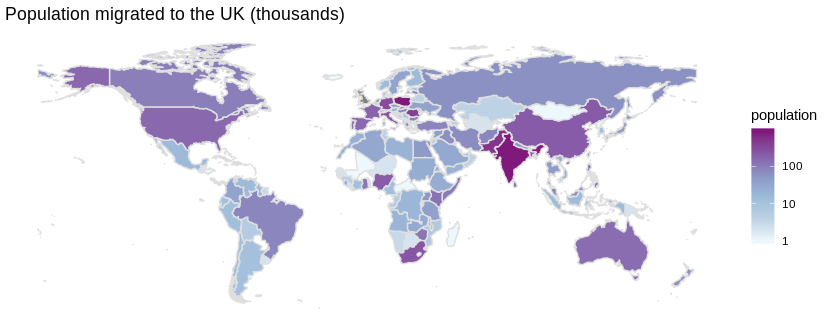
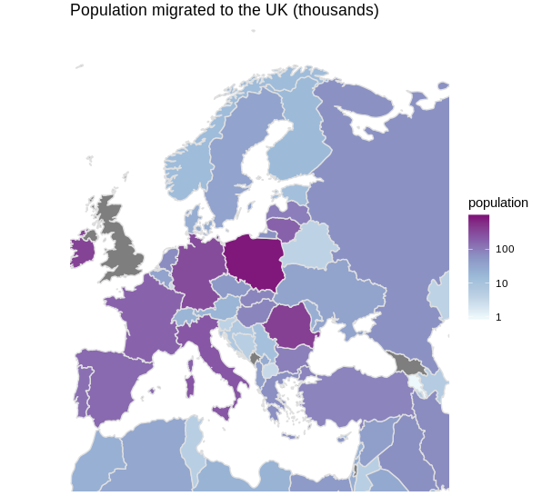
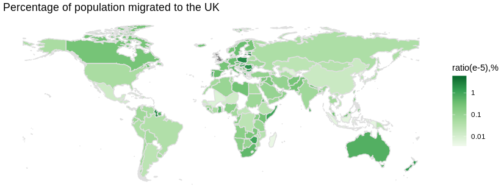

by Mariia Bondarenko
The United Kingdom is one of the most diverse countries in the world due to a high level of immigrants continually moving to the island. Almost 10 million people of the British population were born abroad. However, the centres of migration are not homogeneous around the world. The immigration law that varies for countries, as well as the reason to migrate to the UK, create a pattern of origin of immigrants in the United Kingdom.
So far, EU citizens have been free to live and work in the UK as one of the EU member states without the need for a visa. That ensures free movement of labour and job opportunities for those EU citizens who seek a better life. Even though, after three months upon arrival you should prove that you have a job, are a student or can support yourself on your own, this is an opportunity that is widely used by those who want to improve their financial situation. Eastern Europe as the least developed part of the EU is the main flashpoint of immigration to the UK in Europe.

* The data is taken from the Office for National Statistics
* The data is taken from the Office for National Statistics
Poland is the leader among all countries in terms of the number of immigrants. Poles have had a long history of immigration to the UK since World War 2 and account for just under 1 million in 2018, which is the largest single nationality from the rest of the EU. Poland's GDP per capita is significantly lower than Britain's ($15.4, compared to the UK's $ 42.6) with the average hourly wage 13$, which is four times less than in Britain. As a result, still, a lot of skilled workers are tempted to move to the UK.

* The data is taken from the Office for National Statistics
The situation is worse in Romania, the country with the second the most significant number of migrants moving to the UK. When the country joined the EU, it was expected that Romania would grow and develop its economy. However, this country is still stuck with corruption and poverty. According to Eurostat, more than a third of Romanians are at risk of poverty and almost half of the country's children are borderline poor. Consequently, more than 400 thousand people born in Romania moved to the UK and currently live there.
Close ties link Great Britain with India, Pakistan, Bangladesh as former colonies, which resulted in a long history of immigration. They even created two separate national groups within the UK: Indian British and Pakistani British. Therefore, it is not surprising that the immigrants from those countries are one of the major groups in terms of quantity (862000 Indians and 529000 Pakistani). Most African immigrants come from Nigeria and South Africa, other two former British colonies. Those countries are the most developed in Africa, the access to information for the poor is better than in other African countries, so people get to know about the opportunities and migrate more than from the neighbouring countries. However, the rich and the poor are distributed not equally around the country. The percentage of poor people is big enough to cause a high rate of migrants.

* The data is taken from the Office for National Statistics
Meanwhile, if we look at the correlation between the number of immigrants and the total population of each country we can see a different picture. The ratio for immigrants from Ireland is high due to a relatively low population and the close proximity of this country to the UK, so it is an absolute leader for this rate. Another reason is that the legal regulations for Irish migrants are favourable, which almost equates Irish with British citizens. It works the other way around for India, which shows one of the highest numbers of the immigrated population, whereas the ratio is much lower due to the enormous total population of the country.
* The data is taken from the Office for National Statistics
All the people who decided to move to the UK do it for a specific reason. The statistics show that the tendency for the main reasons to migrate was changing from year to year. From 1990 to 1997, those reasons were distributed almost equally, but since 1997 there was an absolute winner – labour migration. The UK's labour market is considered to be an attractive place for migrants from both within the EU and from non-EU countries. In the meantime, more people move to the UK for a definite job, rather than to look for a job. Another popular reason to migrate is a formal study. A family joining is one of the least popular reasons and remains relatively stable throughout this period.
A geographical location also determines the tendency to migrate for a particular reason. Non-EU citizens tend to move for formal study or family joining, whereas EU citizens usually come for work (Office for National Statistics). Inside EU countries, Eastern Europe represents the highest figures for work migration.
In 2017, according to the recently available data, the picture was the following: about 276,000 (55%) came for work, followed by those who came for study (196,000 or 32%). Family reasons for migrating were reported by 80,000 or 13% of migrants, and other reasons account for 60,000 or 9%. Comparing with the previous year, a bit fewer people migrated for work and family reasons, whereas more students moved to the UK to study.
In summary, the UK's economic factors and the history of migration are likely to be the main contributors to current migration patterns. The UK's labour market is a significant reason for migrants from all the world to choose this country to be a new home. The UK's colonial relations with a range of countries influences its present demographic structure and inflow of new migrants. Community networks that already exist in Great Britain facilitate new migration by lowering the risks of migration in people's minds, provide support to new members and help to find a job.
Another reason that facilitates the flourishing of migration to the UK is language. English language as a second language around the world makes immigration easier for many people. Finally, the UK is attractive for students seeking for high-quality education. According to UNESCO, the UK had the second highest number of international students after the US. However, there is a range of policies that stop migration at some point and don’t allow it to boost. Non-EU workers can’t enter the country to work for low-skilled jobs, which means you can come to the UK only if you signed a contract for a specific job that matches certain criteria, or you come as a student. This issue may become relevant soon for EU citizens if Brexit regulations enter into force.